LPGSim: A Lightweight Parallel GPU Simulator Maximizing Speed with Trustworthy Simulation 深度解读
作者：Hyunwoo Nam、Jay Hwan Lee、Yeonsoo Kim、Mengzhao Zhang、Jeonggeun Kim、Bernd Burgstaller。
期刊：Proceedings of the ACM on Measurement and Analysis of Computing Systems（POMACS），2026，10(2)，Article 44，27 页。
DOI：10.1145/3805642。
一句话总结：LPGSim 用“保留访存时序与依赖、压缩计算细节”的混合精度模型降低单线程成本，再通过局部时钟、NUMA 分组及有代价的同步放宽加速并行仿真，把研究重点从逐部件复刻转向可承受时间内的 GPU 性能趋势分析。
一、问题定义（Problem）
背景：模拟 GPU 为什么比运行 GPU 慢这么多
GPU 以 warp 为调度单位，在大量 streaming multiprocessor（SM）上并发执行线程块。计算指令访问寄存器和执行单元，访存指令经过 L1、互连、L2 和 DRAM；一次 load 是否命中、返回时间及其后续指令的数据依赖，共同决定一个 warp 何时可以继续。Cycle-level simulator 在 CPU 上逐模拟周期维护这些状态，才能回答“修改 cache、内存时序或调度策略后，性能怎样变化”。因此，目标 GPU 的并行性越强，模拟器每周期需要维护的部件越多，模拟时间就越难承受。
本文属于改进型工作。已有 Accel-Sim 等模拟器通过详细流水线和存储系统获得较高准确性，但大工作负载的模拟很慢；已有加速方向包括简化模型、并行化 SM 和使用解析模型。问题在于：删错细节会失去性能可信度，只并行 SM 又会被互连串行路径和全局屏障限制。作者在 §2.3 引用既有研究的约五百万倍实机时间差距，以及 16 线程仅 5.8× 的 fork-join 加速，说明需求并非人为制造；这些数字是引用的背景证据，不是 LPGSim 本文测出的结果。
本文希望同时回答两个问题：哪些模型细节值得保留，哪些主机同步值得支付？第一层是 GPU 模型的精度预算，第二层是 CPU 并行执行的协调成本。论文追求的“trustworthy”主要体现为周期趋势和内存计数的可用性，并不意味着所有工作负载都具有低误差，更不等于功能正确性验证。
动机评估与核心 Insight
动机总体扎实，但适用假设有边界。 §2.2 综合既有观察指出，SM 占据大部分模拟时间，而 memory system 对现代 HPC/ML 负载的准确性至关重要。因而可以压缩计算模型，同时细致保留访存行为。本文动机章节没有独立的新 profiling 图；后文 Fig.7 才提供 SM 时间占比及加速分解。不能把“大量现代负载受内存约束”推成“所有计算依赖都无关紧要”，特别是长延迟计算、专用单元和计算依赖链可能成为主要瓶颈。
核心 Insight 是保留因果关系中最值钱的部分。 在 GPU 模型中，保留由未完成访存引起的等待，统一处理其余计算；在并行模拟中，一个部件只需要等真正向它交付请求的邻居，不必等整个 GPU；在主机 NUMA 层面，少量动态均衡应服从数据局部性。最后，对于足够长的 kernel，可以容忍有限模拟时钟偏差来换取吞吐，但短 kernel 的起止误差会被放大。这些观察串起全文，而不是互不相关的若干优化。
二、相关工作（Related Work）
论文在 §2 和 §8 按建模方法与加速路径展开相关工作，可归纳成四条脉络。
| 路线 | 核心方法及代表 | 留给 LPGSim 的空间 |
|---|---|---|
| 详细周期级模拟 | GPGPU-Sim 采用 PTX execution-driven 模式；Accel-Sim 引入 NVBit 采集的 SASS trace；其他工作扩展架构、异构系统或多 GPU 支持 | 能研究微架构，但逐指令、多执行单元及完整依赖维护很贵 |
| 降低模型复杂度 | Jain 等强调存储系统准确性；NVArchSim/Need for Speed 比较不跟踪依赖、单 outstanding load、完整依赖及互连精度 | LPGSim 进一步选择“只跟踪访存指令相关依赖”，并把 trace 改造成 COMPUTE/DEP 表示 |
| 并行周期级模拟 | 以 SM/计算单元为并行任务，常用 fork-join；另有只模拟功能的并行模拟器 | L2/DRAM/互连串行部分与全局同步限制扩展；功能模拟加速不能直接代替时序模拟 |
| 解析、采样与学习模型 | interval 模型估计停顿，reuse-distance 模型预测 cache，principal kernel analysis 选代表 kernel，ML 模型预测性能 | 估计速度快，但细粒度新微架构仍需要可修改的周期级模型；论文认为两者可组合 |
创新并不在于首次提出“简化”或“并行”，而在于为二者选定共同的系统边界：保留详细存储系统，把 SM、memory 和 interconnect 都变成可并行对象。需要保留一个细节：本文实验中的 fork-join 基线已额外并行 memory 子系统，因此与它比较时，主要剩余串行对象是互连，不能把该基线描述成只并行 SM 的原始实现。
三、技术挑战（Challenges）
- 怎样省掉计算模拟，又不让访存消费者提前执行？ 删除所有寄存器依赖会放过尚未返回的 load；完整 scoreboard 又失去轻量化意义。需要在 trace 和执行模型之间共同定义必要信息。
- 怎样让互连也并行，同时不制造同周期数据竞争？ SM/L1 和 L2/DRAM 通过共享端口、请求缓冲区与互连交换消息。若读写没有时间边界，结果会依赖主机线程碰巧的执行顺序。
- 怎样让任务均衡，而不在 NUMA 上反复搬状态？ 每周期动态分配能少等慢任务，却可能让子系统状态在 CPU cache 和插槽之间移动；集中式互连还要读取所有其他线程的请求及局部时钟。
- 怎样处理周期工作量方差，而不无限放松时序？ cache hit/miss 等不同路径造成模拟周期成本剧烈变化。Table 1 中 CF 的 SM 单周期均值仅 3.37 μs、标准差却为 14.45 μs，3MM 为 3.25/12.50 μs；按平均工作量分配并不能消除逐周期等待。容许时钟偏差能缓解等待，但 kernel 起止阶段会积累误差。
这里始终有两个“时间”：模拟周期描述目标 GPU 进度，主机耗时描述 CPU 算出这些周期要多久。后文的局部时钟记录前者，优化目标是后者；二者混淆会把加速和预测误差误读成同一个指标。
四、解决方案（Solution）
整体思路与贯穿示例
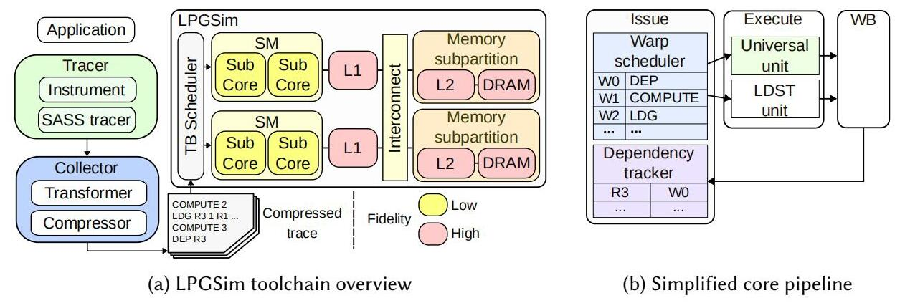
Fig.1 的颜色分出混合精度边界：计算核心和互连较简化，L1/L2/DRAM 较详细。NVBit 从真实 CUDA 执行采集 SASS，转换器合并计算指令并保留访存依赖，压缩后的 trace 驱动模拟器。issue 阶段保留 warp scheduler 和轻量 dependency tracker，execute 阶段只有 universal unit 与 load/store（LDST）单元，最后在 writeback 释放访存依赖。寄存器文件和 read operands 阶段被省去。
贯穿示例（为解释构造，不是论文 benchmark）：一个处理数组的 kernel 有许多线程块，每个 warp 反复执行“加载 A[i] → 做两条不依赖该 load 的地址/整数计算 → 使用 A[i] 做计算 → 加载另一数据 → 写结果”。线程块分散到很多 SM，访存经过不同 L2/DRAM 分区；在主机上，由多个 CPU 线程共同模拟。我们依次看如何压缩这段程序、保证 load 等待、并行运送请求，再解释长短 kernel 为什么表现不同。
1. COMPUTE 与 DEP：压缩描述，不跳过计算指令所占的发射机会
对示例中“load → 两条独立计算 → 消费 load”的局部序列，概念上转换成：
LDG R3, [A+i] 保留访存指令及访存所需信息
COMPUTE 2 合并两条不依赖该未完成load的计算指令
DEP R3 原来消费R3的那条计算指令，仍要等load返回
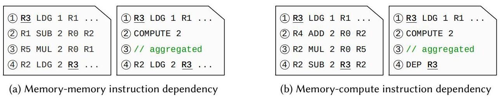
Fig.2(a) 中两条计算之间虽然有寄存器依赖，也会被合并；最后一条 load 对前一条 load 的依赖仍保留。Fig.2(b) 的最后一条计算依赖 R3，因此转换成 DEP R3。这直接回应挑战 1：删除的是详细计算元数据与计算—计算依赖，不是所有依赖。
COMPUTE 2 不表示一个周期完成两条计算。issue 每次减少计数器并向 universal unit 送出一条合成计算指令，计数归零才读取下一条 trace。DEP 同样经通用计算路径，但发射前检查未完成访存的寄存器依赖；依赖未解开就停住该 warp，让 scheduler 选择其他 warp。访存指令走 LDST 路径，完成后在 writeback 清除记录。因此，示例中 A[i] 没回来时，消费者不能因为 trace 被压缩而直接发射。
代价也很明确：实际计算指令的专用执行资源、长延迟计算和计算—计算相关停顿不再被详细表达。本文不是重新计算数据值的功能模拟，访存地址等来自既有 trace，所以该办法也不能证明新设计下程序的功能正确性。
2. 存储系统保持详细：保留示例中真正决定等待的服务路径
L1 支持 banked、sectored cache 和可调整的 shared-memory/data-cache 分配；L2 使用不可约多项式 hash 缓解 partition camping，提供可配置 transaction size，并建模 A100 的 L2 分区；DRAM 保留时序及结构配置，可描述 GDDR/HBM。因而示例中两个 load 是否争同一 bank、是否落在不同 L2 分区、何时从 DRAM 返回，仍能影响模拟时序。
这种选择回应挑战 1 的另一半：只保留依赖还不够，依赖什么时候解除也必须足够可信。互连则主要捕捉带宽和延迟效应，并不进行完整包级网络仿真，因此对精细路由、仲裁和拥塞机制的研究能力仍有限。
trace 先做地址 base/stride 压缩，再用 Zstandard 压缩。这里应区分三件事：计算合并降低表示复杂度，地址及通用压缩降低容量，流水线简化降低模拟工作量；文件更小不等于已经证明采集/转换的端到端时间更短。
3. 子系统、双缓冲和局部时钟：只等待请求来源
LPGSim 划分三类任务：SM 与其私有 L1 构成 SM 子系统，某 memory subpartition 内的 L2 与 DRAM 构成 memory 子系统，二者之间另有 interconnect 子系统。示例中每个 SM 可独立更新内部流水线，不同存储分区也可独立服务请求；通信是必须协调的边界。
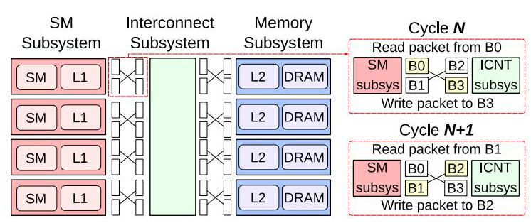
Fig.3(a) 显示请求跨子系统时采用双缓冲：本周期写入新请求，读取上一周期留下的请求，下一周期交换缓冲角色。这让同周期的内部模拟无需同时读写同一请求缓冲，回应挑战 2。当前导出的本地图仅含 Fig.3(a)；原文 Fig.3(b) 的时间线在 Markdown 中被拆为文本，它比较 fork-join 与 local-clock 两个周期的调度，含义如下。
在严格模式下，模拟第 N 个周期前，只要相关互连已经完成第 N−1 周期，SM 就能看见该看的请求；它无需等无直接通信关系的另一个 SM 完成全局屏障。每个子系统维护 local clock，线程检查依赖子系统的进度，满足条件后模拟并更新本地进度。这样既把互连从串行阶段移到并行任务中，又去掉与无关任务共同等待的屏障。这里取消的是全局同步，局部因果依赖检查仍然存在。
Algorithm 1 还允许静态和动态任务并存：线程先处理绑定的子系统，再获取所属线程组中的动态任务。实现采用尽量均匀静态绑定、余数作为动态任务的策略，使负载均衡不必以每个周期搬迁所有状态为代价。
4. NUMA 分组与互连并行：把协调热点拆开
把示例扩展到两个 CPU 插槽后，一个互连线程要访问全部 SM/L2 请求队列和 local clock，cache coherence 与远程访问会把它变成热点。若所有子系统都能在任意线程之间迁移，先前的动态均衡收益也可能被数据移动抵消。
LPGSim 把线程和动态任务划入多个组，每组线程位于同一 socket；动态子系统只在所属组内调度。互连也拆为每组的 sub-interconnect，分别处理本组来源请求并仲裁。多个 sub-interconnect 可能同时发往同一目标，故通信缓冲改为使用 CAS 的 concurrent queue，以保证并发访问安全。
这回应挑战 3，但应区分无数据竞争和完全复现串行仲裁顺序：CAS 队列解决前者，不保证后者。作者承认独立仲裁的顺序变化会带来小幅准确性损失。因此，不能把“所有并行化都不改变模型结果”作为本文结论。
5. 放宽时钟差与批量周期：明确用精度换等待时间
前述机制仍会等到依赖子系统足够接近。针对挑战 4，作者添加两个旋钮：允许局部时钟与依赖方相差一定 threshold；以及每次调用连续模拟 bsize 个周期再更新进度，减少逐周期检查、任务切换和方差影响。Algorithm 1 伪代码默认 threshold=0、bsize=1；实验图把 threshold=1 作为对应既有配置的起点，两处计数口径不宜强行等同。
回到数组示例：若 kernel 有大量线程块、运行很久，起步和收尾错开少量周期，相对总周期可能很小；若 kernel 只有很少工作，起止阶段就可能占很大比例。尤其某线程上的 SM 已结束、但 memory 仍服务其他线程请求时，该线程每周期工作骤减，局部时钟可能快速超前，产生额外尾部周期。因而“让线程快跑”并非总能缩短整体模拟，阈值和 batch 都需要控制。
与既有方案的关系
LPGSim 的优点是模型表示、任务边界和主机局部性协同设计。相比只优化某个 C++ 热点，它减少需要模拟的工作；相比仅并行 SM，它覆盖 memory 和互连；相比全局任意任务迁移，它尊重 NUMA 局部性。局限则来自同一组选择：无法研究已删去的执行单元细节，且较激进并行配置的误差必须按 workload 重新检查。
五、实验评估（Experiments）
实验设定与结果口径
| 维度 | 论文设置及阅读注意 |
|---|---|
| 工作负载 | Rodinia、Parboil、PolyBench、DeepBench、MLPerf Inference 4.1；MLPerf 含 BERT、ResNet50 |
| 实验子集 | Table 2 分 Acc.、Comp.、Par.；不是所有 benchmark 参加每项实验，MLPerf 参加准确性/并行实验，但未参加 Accel-Sim 速度比较 |
| 真实 GPU | V100：80 SM、6 MB L2、HBM2；A100：108 SM、40 MB L2、HBM2e；RTX 3090：82 SM、6 MB L2、GDDR6X |
| 软件 | NVCC 12.4、cuDNN 9.1.0、NVBit 1.7.2、GCC 12.4.0、Nsight Compute 2024.1.1.0 |
| 性能目标配置 | 以 RTX 3090 配置比较模拟器主机运行时间 |
| CPU 平台 | 文中报告双路 Xeon E5-2697 v3、总内存 512 GiB，并使用 28/56 线程配置；原文同时写每插槽 28 physical cores，未进一步澄清核心/线程口径，本文不据此推断物理核效率 |
| 准确性指标 | cycles 用文中定义的百分比 MAE；load/store、cache/DRAM 计数用 NRMSE，另报标准差和 Pearson correlation |
| 性能基线 | 单线程 LPGSim 对 Accel-Sim；并行 LPGSim 对其自身单线程；fork-join 是作者实现且已并行 memory 的对照 |
§6.1 的准确性测试关闭 §4.3 的同步放宽，不能直接贴到最高加速配置。§6.2 则另外考察放宽同步后的误差。本文把前者称为基础准确性，把后者称为并行配置的附加误差，避免混用。
论文用 AOSP（approximated occupancy-based speedup）解释工作负载的并行潜力：在 Amdahl 思路中，以 线程数 × occupancy 近似有效并行度，occupancy 是真实硬件上按执行周期加权的活跃 warp 比例。作者明确说它是启发式指标，不是可实现加速的理论上界；公式中的时间项需作归一化比例理解，不能将任意秒数直接代入称作无量纲 speedup。
1. 基础准确性：周期约 22% 误差，内存计数更准确
| GPU | 周期 MAE | 周期标准差 | 周期 Pearson r | L1 read miss NRMSE | L2 read miss NRMSE | DRAM read NRMSE |
|---|---|---|---|---|---|---|
| V100 | 21.4% | 18.0% | 0.98 | 5.22% | 5.40% | 1.14% |
| A100 | 23.3% | 20.2% | 0.97 | 6.19% | 4.15% | 0.35% |
| RTX 3090 | 22.7% | 21.6% | 0.98 | 6.89% | 4.90% | 5.47% |
Table 5 还显示 load 指令计数 NRMSE 均为 0.01%，store 为 0.04%–0.05%，L1 write 为 0.02%。这些数字支持访存事件及存储行为建模的可信度，但周期标准差说明单个 workload 偏差可能显著，不能将平均值当作逐 workload 保证。
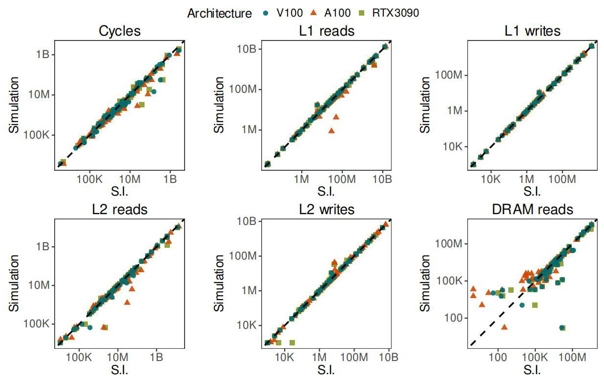
Fig.4 在对数坐标上比较硬件与模拟值。较高相关性表明跨工作负载量级趋势吻合；它不自动证明两个接近候选设计的优劣排序都可靠，也不能抵消约 22% 的周期平均误差。
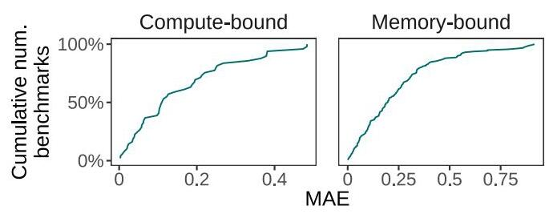
Fig.5 按 roofline 划分 49 个 compute-bound、158 个 memory-bound 样本，合计跨三种架构的分类结果，不能当作 207 个不同应用。作者观察到计算受限组也没有显著恶化，解释为这些测试中的长延迟/计算相关停顿并不突出。这支持“这批负载可简化”，尚不足以覆盖任意强计算依赖程序。
Table 6 的同实现消融更有说服力：不跟踪任何寄存器依赖时，LPGSim 平均周期误差约 28%；保留访存依赖后约 22%，改善 6 个百分点。No-track 的三架构相关性为 0.96/0.93/0.90，也低于默认的 0.98/0.97/0.98。这直接验证示例中 DEP 不能一并删除。
同表引用 Accel-Sim 24%、NVArchSim 17% 的既有误差，但 workload 和架构不同。LPGSim 没有自身的详细核心版本作为同配置对照，故这些数只能给背景尺度，不能证明简化核心仅增加了多少误差，也不能据此宣布比 Accel-Sim 更准确。
2. 单线程速度：9.97× 的来源不只是代码重写
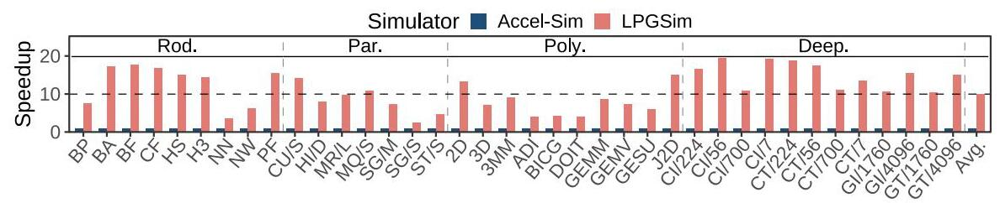
Fig.6 在参加 Comp. 的 RTX 3090 配置工作负载上给出平均 9.97×。这是模拟器运行速度，不是 GPU 应用加速，也不是包含 trace 生成的端到端加速。
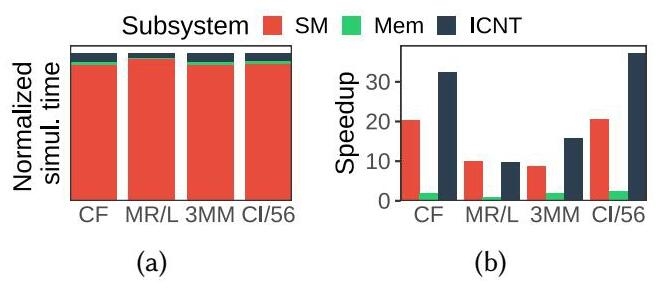
对 CF、MR/L、3MM、CI/56 四个 workload，SM、互连、memory 子系统分别平均快 13.8×、20.8×、1.60×。memory 没做同类模型简化，作者把它的改善归于独立代码实现；SM/互连则同时受模型简化与实现差异影响。虽然互连相对加速更高，SM 原始时间占比更大，因此核心简化才是整体收益的主要来源。该 profiling 支持归因方向，但不是把每个因素独立开关后的严格消融。
3. 并行扩展：每消除一个瓶颈，另一个瓶颈浮现
以下 speedup 的分母全部是单线程 LPGSim，不能直接和 9.97× 混为一列。
| 并行方案 | 28 线程 | 56 线程 | 关键含义 |
|---|---|---|---|
| fork-join | 9.44× | 8.37× | 加线程后串行互连和屏障限制更明显 |
| 基础 local-clock | 10.6× | 7.41× | 单插槽改善，但双插槽协调代价反而更大 |
| 分组与互连并行，各自最佳组数 | 14.25×（4 组） | 12.56×（8 组） | 降低热点和迁移，双插槽仍未超过单插槽 |
| 时钟差 threshold=256 | 15.88× | 16.96× | 该实验使用 8 组；容许有限偏差后双插槽开始获益 |
| 再批量模拟周期 | 28 线程反而退化 | 19.8×（batch=4） | batch 收益依赖主机配置，不能默认越大越好 |
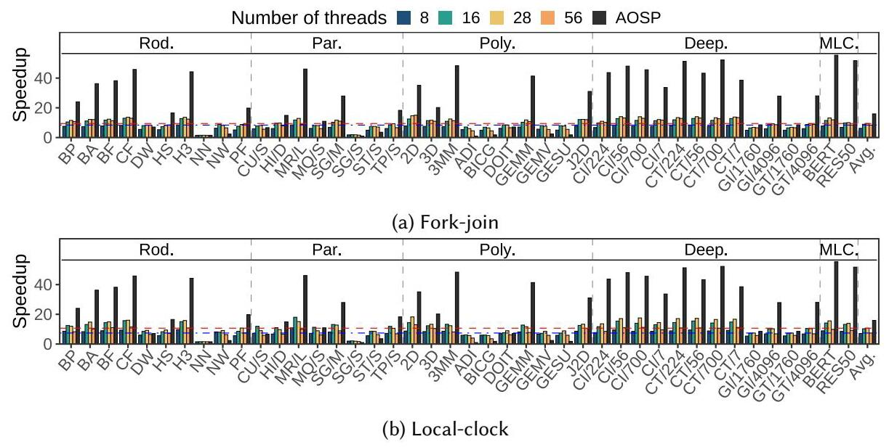
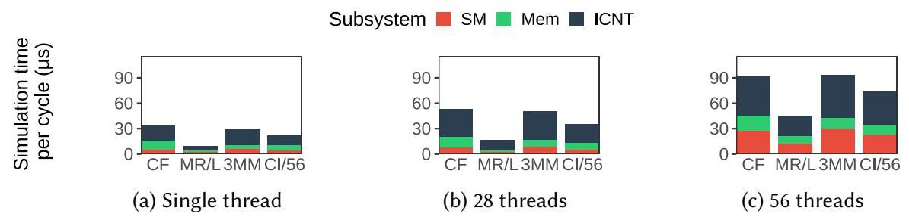
Fig.8 中 56 线程不及 28 线程，是论文重要的反直觉证据；Fig.9 解释为什么“已经全部并行”仍然慢：SM 总时间大，但每个 SM 小，分摊后一个集中式互连的协调成本反而主导。到了双插槽，local-clock 读取与请求交换的跨线程/跨 socket 通信把互连成本进一步抬高。
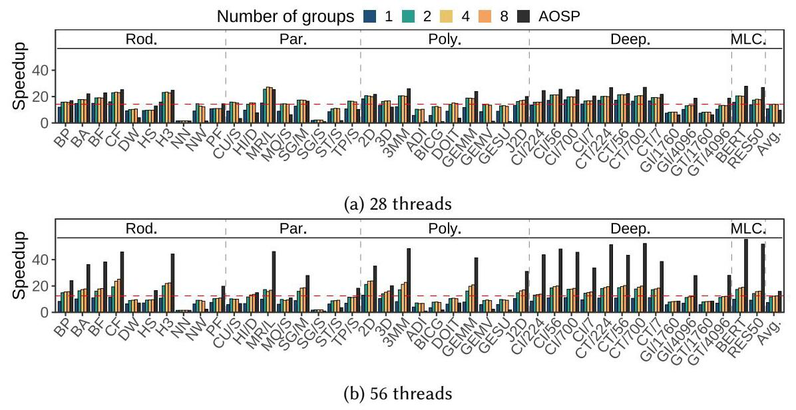
Fig.10 的 1 组配置等同未并行互连的 local-clock。组数增加能减轻集中通信，56 线程相对收益尤其明显，但结果仍不意味着分组越多越好；负载均衡、每组任务数和通信成本共同决定最佳点。
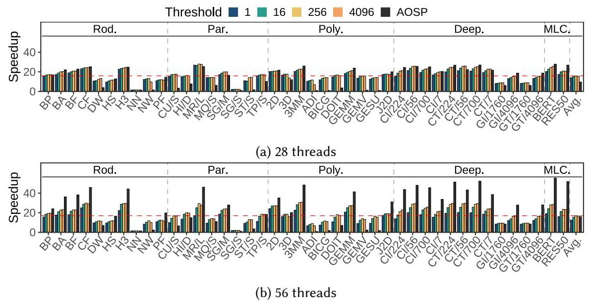
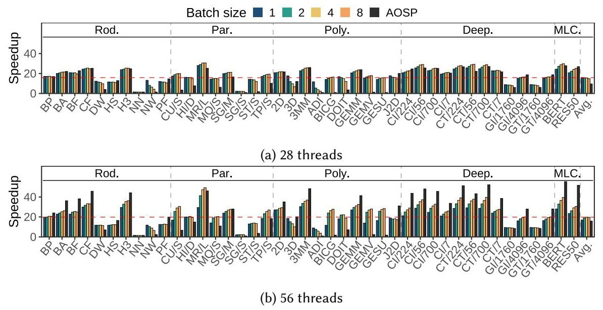
Fig.11 的阈值扫描为 1、16、256、4096，最佳平均速度在 256；56 线程下 DeepBench 和 MLPerf 分别达到 20.1×、25.6×。Fig.12 从 threshold=256 继续改变 batch=1/2/4/8；单插槽批量化变慢，双插槽在 batch=4 达到 19.8×。对于 MLPerf，作者报告未放宽同步时 15.45×、应用两种放宽后 32.99×，这一子集结果不能代替总体平均值。
4. 精度代价：长 kernel 的结论不能平移给短 kernel
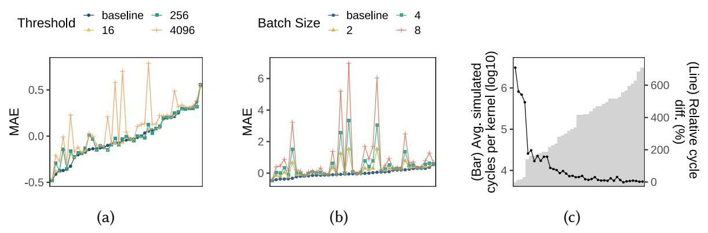
按 §6.2 的文字结论，阈值放宽到 256 时误差变化很小，4096 时部分 workload 恶化；增大 batch 对 NN、NW、3D、J2D 等短 kernel 的影响显著。Fig.13(c) 用 threshold=256、batch=8、56 线程与单线程比较，发现平均 kernel 周期越短，相对周期差越大。注意它并非最高总体速度所在的 batch=4 配置，且该“相对单线程周期差”不同于“相对真实硬件误差”。
这里有两处原图表达不一致，值得保留而非替作者修正：Fig.13(a)(b) 纵轴标为 MAE 却出现负数，严格意义上的绝对误差不可能为负；Fig.13(c) 图注称周期为折线、差异为柱形，图内轴标却标注周期为柱形、差异为折线。因此本报告只使用可与正文互证的趋势，不从这张图硬读精确 MAE，也不把图中极值当作一个已明确定义的误差统计量。
5. 端到端开销与证据边界
Table 3 显示 trace 容量确实可观：MLPerf 原始 trace 平均 2186.86 GB、最大 3911.58 GB，只做地址压缩后平均 713.20 GB，再加 Zstandard 后平均 12.36 GB、最大 19.35 GB；DeepBench 平均从 18.16 GB 降到 0.06 GB。这些是存储容量，不是 trace 采集、COMPUTE/DEP 转换、压缩和解压的时间测量。论文没有给出这些阶段的完整耗时分解，因此无法从 9.97× 或 19.8× 推出一次性运行完整工具链的端到端加速；多次复用 trace 做配置探索时，预处理成本才可能被摊薄，这是使用情境推论。
作者给出总加速 197.4×，数值上是约 9.97 × 19.8。但 Comp. 和 Par. 子集并不完全相同，且最高并行速度伴随附加误差；应把它理解为论文按两层平均收益组合出的总量级，不能当作所有 workload 都直接测得的统一端到端加速。
结论支撑性评价：多架构、五套 benchmark、存储事件计数和逐层并行实验共同支持“以有界用途换高吞吐”的主张。薄弱处在于：没有同实现完整核心与轻量核心的配对消融；没有展示系统的候选架构排序验证；最高速度配置缺少与基础准确性表同等完整的统计；部分性能实验受时间限制筛选，完整模型仅用 BERT/ResNet50；线程/物理核及 Fig.13 口径需谨慎。以此做存储系统或大 kernel 的早期探索较有根据，用它判断细粒度计算单元改动则超出主要证据范围。
六、附加洞察（Side Findings）
结论 1：在已测试的 A100 tensor-core 工作负载中，统一计算单元仍能得到较小周期误差。
出处：§6.1 “Impact of the specialized hardware units”。
推理链条：作者识别出实际用了 tensor core 的五个 benchmark → 它们的 tensor 指令在 LPGSim 中仍全部转换为普通 COMPUTE → CT/341、CT/56、CT/7、BERT、ResNet50 的周期误差分别为 2%、9%、2%、11%、2% → 作者据此判断这组测试里 tensor 指令简化带来的准确性问题有限。薄弱点是没有相同工作负载的详细 tensor pipeline 对照，因此这些是总误差观测，不能严格分离 tensor 简化的独立误差，也不覆盖所有 tensor-heavy kernel。
结论 2：本实现中 trace 读取不是值得优先并行化的热点。
出处：§4.4 “Implementation Details”。
推理链条：每个 kernel 的一个 trace 文件包含全部线程块 → 多线程读取需要同步避免竞争 → 虽然可以设计并行读取，作者观察到该阶段耗时可忽略 → 因此保留串行/同步读取，把工程精力投入模拟本身。论文未给该阶段量化比例，故这个判断只应限定在其压缩格式、平台和工作负载下，不能推出任何 trace-driven 模拟器的 I/O 都不重要。
结论 3：轻量核心已丢失核心功耗建模需要的信息，而存储功耗扩展仍有数据基础。
出处：§7 “Power model”。
推理链条：不同计算指令被折叠为统一类型 → 无法恢复每条指令使用的确切执行单元 → 不能统计核心各单元的准确活动及能耗；相反，详细存储系统保留 L1/L2/DRAM 的访问计数和时间 → 可获得访问率，为带估计参数的存储功耗模型提供输入。前半是当前能力边界，后半只是作者论证的可扩展性，本文没有实现或验证完整功耗模型。
七、总结与个人评价（Wrap-up）
LPGSim 的贡献是把“保留哪些因果细节”落实到 trace 格式、核心流水线及并行任务边界：基础周期误差约 21%–23%、相关性约 0.97–0.98，换来相对 Accel-Sim 的 9.97× 单线程加速；再通过分组和同步放宽把并行加速推到相对自身单线程的 19.8×，但需额外承担精度代价。
最大的亮点是认真展示优化失败的中间状态：local-clock 在双插槽反而更慢，分组还不够，batch 在单插槽也可能退化。最大的不足是“可信”主要依赖跨 benchmark 相关性和若干误差统计，尚未完整证明微架构设计排序的可靠性，轻量核心的精度损失也缺乏同实现配对对照。个人判断：下一步最有价值的是建立依赖强度、kernel 长度与同步参数之间的自适应准则，并用相同设计点、相同工作负载和端到端成本做配对验证；这属于报告建议，不是论文已经实现的功能。
八、章节脉络与段落速览（Structure Map）
以下按正文自然段编号，编号在每个章节或子小节内重置；公式、算法、表格、图注及贡献列表归入相应段落，不把分页拆出的文字视作新段；图表因版面浮动提前出现时按逻辑所属章节导航。
- Abstract：概括混合精度与并行化两层加速。
- ¶1 说明大规模 workload 需要既可信又足够快的 GPU 模拟器。
- ¶2 概述计算元数据压缩、局部时钟并行及精度—速度结果。
- 1 Introduction：提出快而可信的模拟需求并陈述贡献。
- ¶1 说明 HPC/ML 增长要求可用于架构探索的工具。
- ¶2 对比模型简化和并行化两条加速路线的精度与扩展代价。
- ¶3 概述 LPGSim 的轻量核心、详细存储及分层并行方案。
- ¶4 汇总实验结果，并以三项贡献列明模型、并行方法与评估覆盖。
- 2 Background and Motivation：建立 GPU 建模方法及性能瓶颈背景。
- 2.1 GPU Architecture Simulation：比较解析建模与周期级模拟。
- ¶1 从 GPU 的普及引出架构建模工具需求。
- ¶2 说明解析模型更快、周期级模型更适合评估微架构变化。
- 2.2 Trade-off between Accuracy and Simulation Speed：论证保留详细存储而简化核心的动机。
- ¶1 结合 SM 时间占比和内存准确性研究提出混合精度取舍。
- 2.3 GPU Simulation Parallelization：解释已有 SM 并行为什么扩展有限。
- ¶1 用既有仿真慢速与 fork-join 加速数据说明并行需求。
- ¶2 分析串行 memory/interconnect 与全局同步，并提出按通信依赖解耦的机会。
- 3 LPGSim Toolchain：介绍 trace 到混合精度模拟器的端到端构成。
- ¶1 用 Fig.1 说明 trace 转换压缩、不同部件精度及实现来源。
- 3.1 Core Pipeline Simplification：解释计算指令合并和访存依赖保留。
- ¶1 定义简化流水线中保留与删除的组件。
- ¶2 说明只维护访存相关寄存器依赖的 tracker。
- ¶3 定义转换后的 COMPUTE 与 DEP 指令。
- ¶4 通过 Fig.2(a) 解释访存—访存依赖和计算合并。
- ¶5 通过 Fig.2(b) 解释访存—计算依赖的 DEP 表示。
- ¶6 逐类说明 COMPUTE、memory、DEP 的发射执行与写回路径。
- 3.2 Detailed and Flexible Memory System Model：列出可配置的详细存储模型。
- ¶1 说明 L1 分 bank/sector、L2 hash/分区及 DRAM 时序配置。
- 3.3 Tracer：说明 NVBit 采集及两级压缩。
- ¶1 将 SASS 插桩、trace 转换和地址/Zstandard 压缩串起。
- 4 Simulator Parallelization：用 Algorithm 1 概览三个并行优化层次。
- ¶1 提出局部时钟、NUMA 分组及同步放宽三种策略。
- 4.1 Local-Clock-Based Parallelization：用子系统与双缓冲消除串行路径和全局屏障。
- ¶1 定义三类子系统，并用 Fig.3(a) 的双缓冲隔离同周期通信。
- ¶2 说明只检查依赖方 local clock，以及静态/动态任务的执行流程。
- ¶3 用 Fig.3(b) 时间线解释全局屏障等待和串行互连等待的减少。
- 4.2 Thread and Subsystem Grouping and Interconnect Parallelization：解决跨核和跨插槽通信热点。
- ¶1 分析集中互连通信和动态迁移带来的 coherence/NUMA 开销。
- ¶2 说明同插槽分组、子互连与 CAS 队列，以及仲裁次序变化的精度代价。
- 4.3 Synchronization Relaxation for Performance Improvement as a Trade-off of Accuracy：以可控同步偏差缓解周期成本方差。
- ¶1 用 Table 1 的周期方差引出 threshold 与 batch 两种优化。
- 4.4 Implementation Details：交代任务绑定和 trace 读取选择。
- ¶1 说明优先静态分配、余数动态分配，以及不并行 trace 读取的理由。
- 5 Experiment Setup：定义 workload、硬件、指标和各项基线。
- ¶1 用 Table 2 区分五套 benchmark 的实验子集，并以 Table 3 展示压缩容量。
- ¶2 列出软件版本、真实 GPU、Nsight 与双插槽主机设置。
- ¶3 定义周期/存储指标、roofline 分类及准确性实验关闭同步放宽的条件。
- ¶4 说明完整核心对照不可用，因此采用既有误差作参考并添加 No-track 消融。
- ¶5 定义性能基线、加强后的 fork-join 和考虑 occupancy 的 AOSP 公式。
- ¶6 解释 AOSP 的时间项并强调它仅是并行潜力启发式。
- 6 Evaluation：分别评估准确性和各级模拟速度。
- 6.1 Accuracy Validation：验证三架构误差并讨论简化核心的适用性。
- ¶1 用 Table 5 与 Fig.4 报告周期及存储指标误差、标准差和相关性。
- ¶2 用 Fig.5 比较计算/存储受限组，并解释计算简化何时仍足够准确。
- ¶3 检查五个 A100 tensor-core benchmark 的周期误差。
- ¶4 用 Table 6 和 No-track 相关性验证访存依赖保留的作用。
- 6.2 Performance Comparison against State-of-the-Art GPU Simulators：逐层揭示速度收益、扩展瓶颈和误差代价。
- ¶1 用 Fig.6–7 报告单线程 speedup，并区分模型简化与代码实现差异。
- ¶2 用 Fig.8–9 说明 fork-join 的互连串行瓶颈。
- ¶3 解释基础 local-clock 在双插槽上受跨线程通信影响而退化。
- ¶4 用 Fig.10 验证分组及互连并行的收益与剩余限制。
- ¶5 用 Fig.11 说明 threshold=256 的速度优势和大型套件收益。
- ¶6 用 Fig.12 比较批量周期在单插槽与双插槽的相反效果。
- ¶7 用 Fig.13(a) 分析大 threshold 下 kernel 起止错位和冗余尾部周期。
- ¶8 用 Fig.13(b)(c) 解释 batch 对短 kernel 的误差放大及长 kernel 的适用性。
- 7 Discussion：交代特殊指令、功耗及架构覆盖边界。
- ¶1 说明 tensor core 统一处理、测试未出现 texture 指令及当前不支持 texture pipeline。
- ¶2 说明核心功耗信息缺失，而详细存储计数可作为存储功耗扩展基础。
- ¶3 说明仅支持 NVIDIA/SASS、不能保证所有 benchmark 高精度及 trace-driven 功能验证局限。
- 8 Related Work：把 LPGSim 放入模拟精度、并行化和解析建模三条脉络。
- ¶1 回顾 GPU 模拟器演进、依赖精度取舍及各类架构扩展。
- ¶2 指出现有 GPU 并行方法主要关注 SM，突出全组件并行的区别。
- ¶3 介绍 interval、reuse-distance、kernel sampling 与 ML 模型，并说明其与周期级模拟的互补性。
- 9 Conclusion：回收两层贡献、精度速度结果与代码发布信息。
- ¶1 汇总轻量核心和分层并行的取舍，并指向工具链公开 artifact。
- Acknowledgments：披露资助、审稿帮助和生成式 AI 的语言润色用途。
- ¶1 感谢相关贡献者并说明资助及语言编辑声明。
- References：列出 [1]–[81] 的背景、方法、工具与架构资料。
- 条目导航：模拟器/并行化重点见 [6][28][35][38][43][70]，trace 工具见 [71]，LPGSim artifact 见 [49]；参考文献条目不是论证自然段，不逐条复述。
本文无独立附录；文首版权、作者联系方式、ACM 引用格式和文末收修录用日期属于出版元数据，未计入正文自然段。